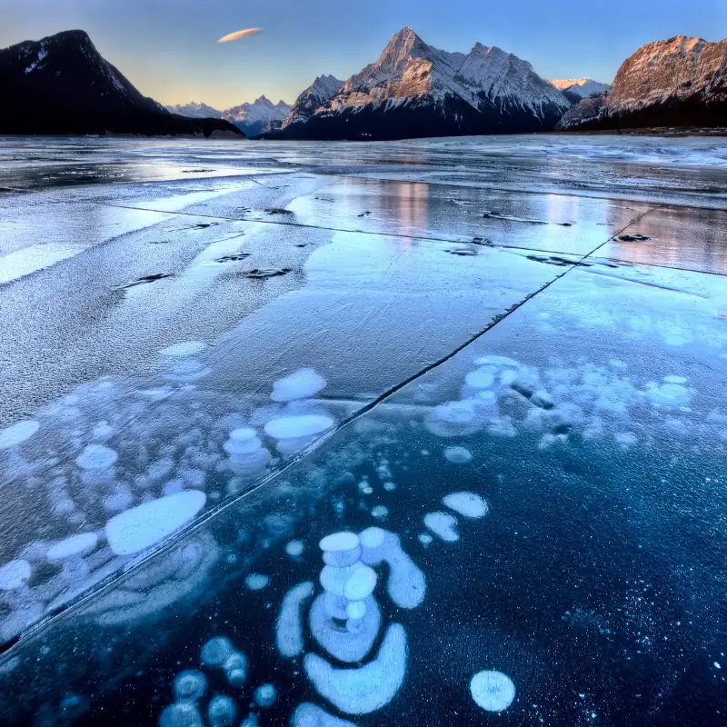
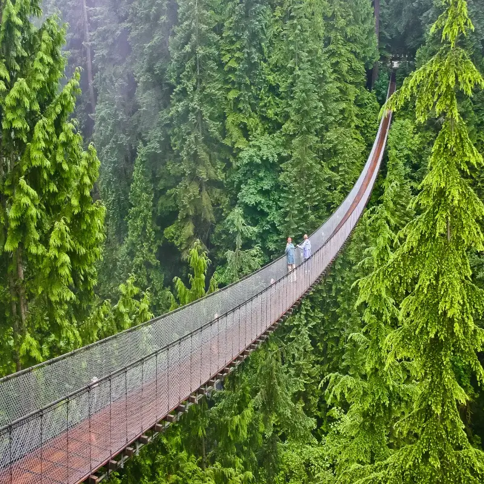
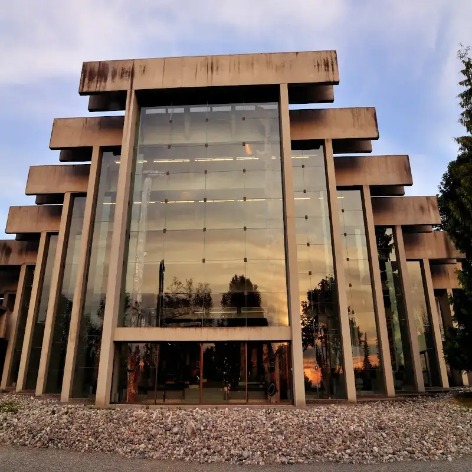
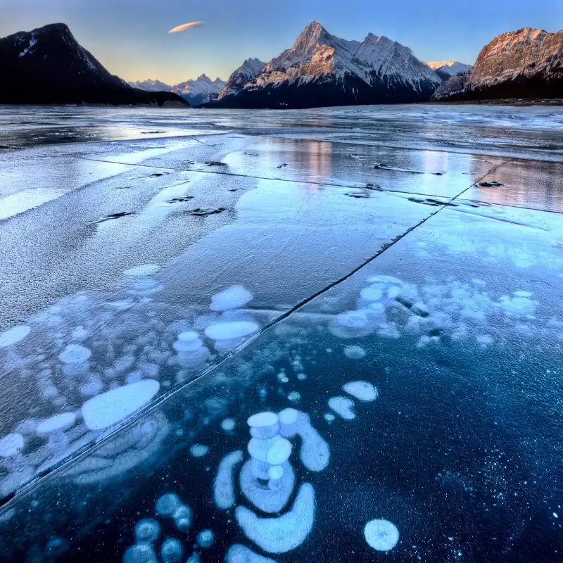
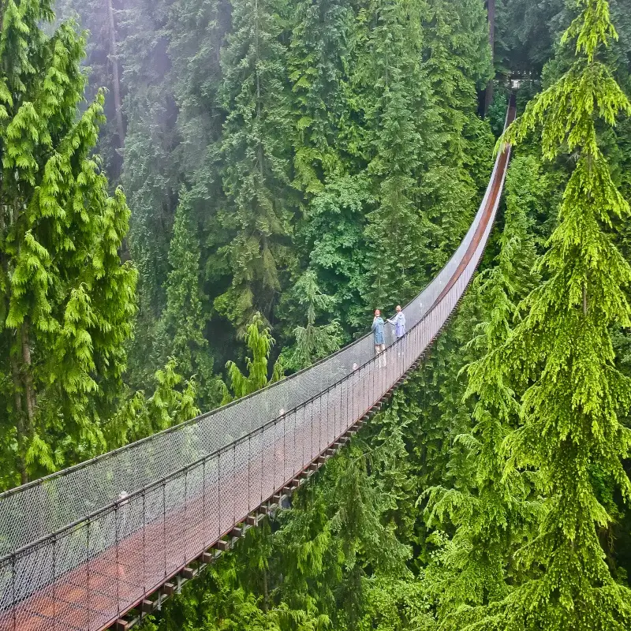
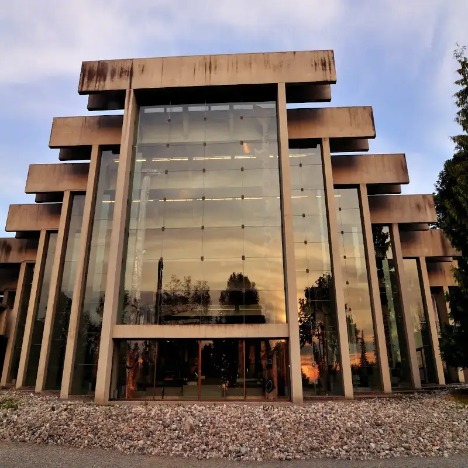

EEUU
El sueño del Oeste Americano (12 días de roadtrip épico)
¡Prepárate para la aventura de tu vida! Este itinerario de 12 días te lleva por el corazón del Oeste americano. Desde las colinas de San Francisco hasta las luces de Las Vegas y la inmensidad del Gran Cañón, hemos condensado lo mejor de California, Nevada y Arizona en un roadtrip inolvidable. Descubre la majestuosidad de los parques nacionales, la energía urbana y los paisajes que te dejarán sin aliento. ¿Listo para arrancar el motor?
- 🌉 Golden Gate
- 🌲 Yosemite
- 🎰 Las Vegas
- 🏜️ Gran Cañon
 




